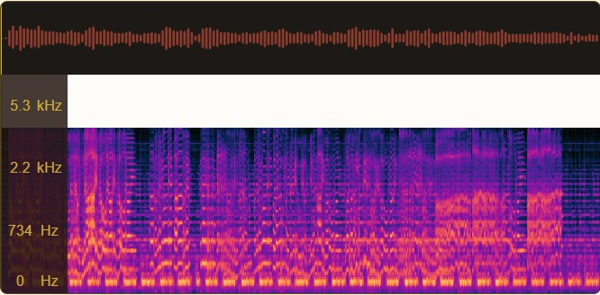
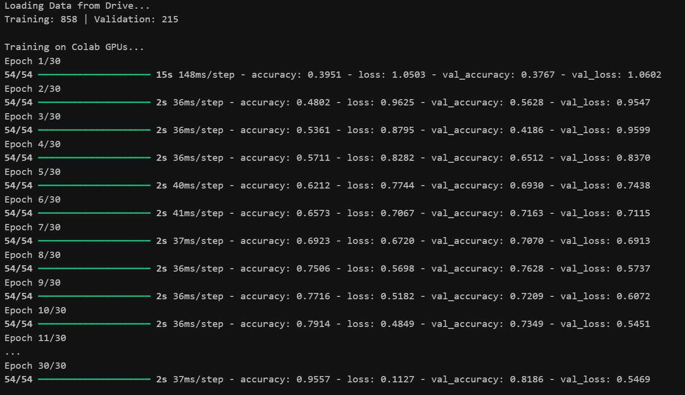

1. Motivation & Problem
- The Cultural Gap: Based on 18 years of Tabla experience, identifying improvisational rhythms (Taals) requires massive ear-training, acting as a steep barrier for students.
- The Acoustic Obstacle: Automated beat detection easily fails when dense acoustic noise, specifically fluid vocal timbres (Alaap) and melodic instruments, overlaps the percussion.
- The ML Innovation: Converting DSP waves into a Computer Vision paradigm. The CNN tracks the visual "stripes" of drum strikes in a Mel-Spectrogram, circumventing vocal interference.
2. Architecture & Pipeline
- Decoupled Edge Stack: Next.js frontend handles ingestion; Dockerized FastAPI handles high-memory TensorFlow inference.
- Feature Extraction:
librosachunks audio arrays into normalized 128x862 2D Mel-Spectrograms (0.0 to 1.0) to prevent dying gradients. - Temporal Constraints: Standard CNNs destroy time sequences. Implemented MaxPooling2D(2,3) to rigorously preserve the horizontal time dimension.
- Democratic Voting: The backend classifies every 20-second chunk. Chunks below a 50% confidence threshold are discarded to protect the final output.

The Application Interface

Bridging Hindustani Aesthetics and Deep Learning: a culturally-grounded landing page funnels users into the CNN-powered analysis engine.


Translating complex tensor arrays into a visually digestible user interface.
3. Engineering Outcomes
81.8%
System Accuracy
1,266
Custom Audio Clips Extracted
4. Training Convergence
30 epochs over 858 spectrogram tensors carried the CNN from 39% to 95% training accuracy. The 82% validation lock — a 13-point generalization gap — defines the exact frontier the Data Flywheel is engineered to close, one user correction at a time.

5. Future Scope
- Sam Localization → AI Accompaniment: Pivot from per-chunk classification to attention-based frame-level labeling that pinpoints each cycle's anchor beat (Sam). Foundation for a real-time AI tabla that auto-locks to a vocalist's tempo — turning Taal AI from passive analyzer into active musical partner.
- Taxonomy Expansion via Transfer: Scale to 10+ canonical Taals (Jhaptaal, Rupak, Ektaal, Keherwa, Chautal) by freezing the convolutional backbone and fine-tuning only the dense head — new classes ship in hours, not weeks.